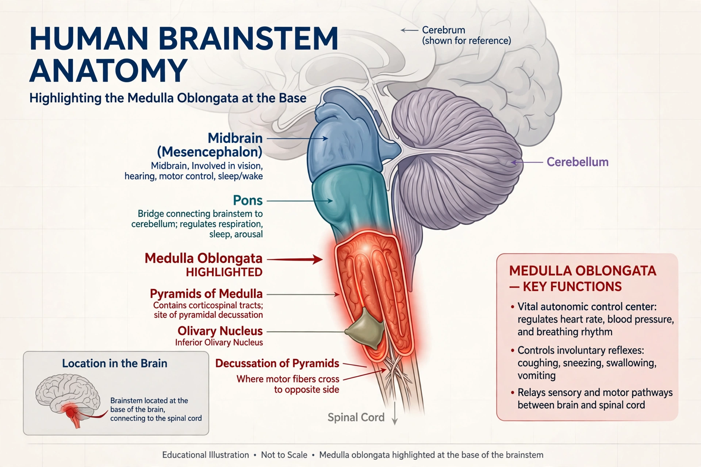

| Part of | Brainstem (hindbrain) |
|---|---|
| Location | Above the spinal cord, below the pons |
| Artery | Anterior spinal, PICA, vertebral arteries |
| Function | Autonomic control: breathing, heart rate, blood pressure, reflexes |
The medulla oblongata or simply medulla is a long stem-like structure which makes up the lower part of the brainstem. It is anterior and partially inferior to the cerebellum. It is a cone-shaped neuronal mass responsible for autonomic (involuntary) functions, ranging from vomiting to sneezing. The medulla contains the cardiac, respiratory, vomiting and vasomotor centres, and therefore deals with the autonomic functions of breathing, heart rate and blood pressure as well as the sleep–wake cycle.

The medulla extends from the foramen magnum to the lower border of the pons, and is continuous below with the spinal cord. Its anterior surface bears the pyramids, containing the corticospinal tracts, most of whose fibres cross to the opposite side at the pyramidal decussation. Lateral to each pyramid is the olive, a swelling produced by the inferior olivary nucleus. The medulla contains nuclei of the lower cranial nerves — glossopharyngeal (IX), vagus (X), accessory (XI), and hypoglossal (XII) — and the nucleus gracilis and nucleus cuneatus, where proprioceptive and fine-touch pathways synapse before crossing as the medial lemniscus.
The dorsal respiratory group and ventral respiratory group of the medulla generate the rhythm of breathing. The vasomotor centre regulates blood vessel tone and the cardiac centre adjusts heart rate in response to baroreceptor and chemoreceptor input. Medullary reflex centres coordinate swallowing, coughing, sneezing, gagging, and vomiting.
Because of the vital centres it houses, injury to the medulla — from stroke, trauma, or compression — can be rapidly fatal. Lateral medullary syndrome (Wallenberg syndrome), typically from occlusion of the posterior inferior cerebellar artery, causes vertigo, dysphagia, hoarseness, and crossed sensory loss. Medial medullary syndrome affects the pyramid, medial lemniscus, and hypoglossal fibres.